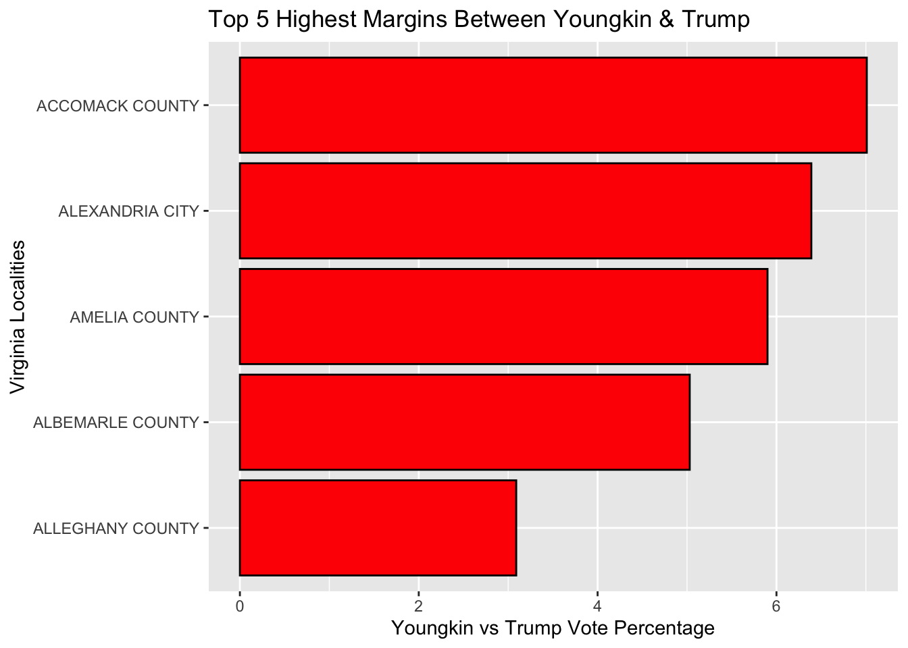
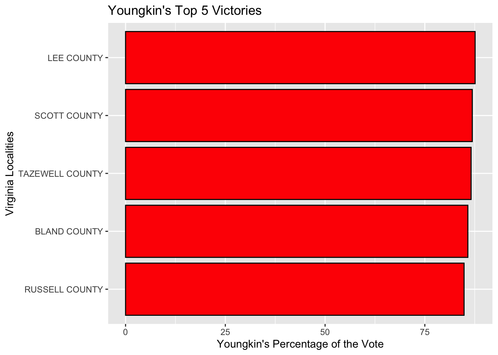

# Create a new column in the joined_vacomparison data set that shows the difference between the percentage of the vote Youngkin and Trump received. This column should include only the top 5 counties (known as localities in Virginia) with the highest differences between Youngkin and Trump votes.
# To do this you will create a function using mutate to generate a new table with the new column included.
# In the mutate function create a new column that subtracts Trump's percentage points from Youngkin's percentage points. Be sure to create a clear name to describe this new column and table. Use the head function to filter for the top 5 counties.
youngkintrumppercentage <- joined_vacomparison %>% mutate(youngkin_vs_trump = pct_youngkin - trump_pct) %>% head(5)Virginia Election Project
# Next, create a well-labled chart to visualize use the data you just made
# You will create a bar or column chart using the ggplot2 package. Be sure to properly label each axis and give the chart its own title.
youngkintrumppercentage %>% ggplot(aes(x = locality, y = youngkin_vs_trump)) + geom_col() + coord_flip() + scale_y_continuous(name = "Youngkin vs Trump Vote Percentage") + scale_x_discrete(name ="Virginia Localities") + labs(title = "Top 5 Highest Margins Between Youngkin & Trump")
# Now, create another chart, but this time to show the top 5 counties where Youngkin got the highest percentage of the vote.
# In order to do so you must create a new column and table that shows the top five counties where Youngkin did best. Use the mutate and head functions again.
top5countiesyoungkin <- joined_vacomparison %>% mutate(youngkintop5 = pct_youngkin) %>% head(5)# Now its time to create the bar/column chart with the new data! Again, use ggplot2 to make the chart and give proper axis and chart titles.
top5countiesyoungkin %>% ggplot(aes(x = locality, y = youngkintop5)) + geom_col() + coord_flip() + scale_y_continuous(name = "Youngkin's Percentage of the Vote") + scale_x_discrete(name = "Virginia Localities") + labs(title = "Youngkin's Top 5 Victories")
# Create another table that shows the top 5 counties based on where the other candidate, Mcauliffe, got the highest percentage of the vote.
# Again, you must create a new column and table that shows the top five counties where Mcauliffe did best. Use mutate again to rename the column. You should also clean up the data set, so filter out the other data from the original table that is not relevant to Mcauliffe's results using the select function. Use the head function to view the table you just created.
top5countiesmcauliffe <- joined_vacomparison %>% mutate(mcauliffe_percentage_of_vote = pct_mcauliffe, mcauliffe_number_of_votes = mcauliffe) %>% head(5) %>% select(-biden, -trump, -biden_pct, -trump_pct, -youngkin, -pct_youngkin, -mcauliffe, -pct_mcauliffe)
head(top5countiesmcauliffe)# A tibble: 5 × 3
locality mcauliffe_percentage_of_vote mcauliffe_number_of_votes
<chr> <dbl> <int>
1 ACCOMACK COUNTY 38.4 4948
2 ALBEMARLE COUNTY 62.0 31919
3 ALEXANDRIA CITY 75.2 43866
4 ALLEGHANY COUNTY 25.0 1518
5 AMELIA COUNTY 25.4 1617